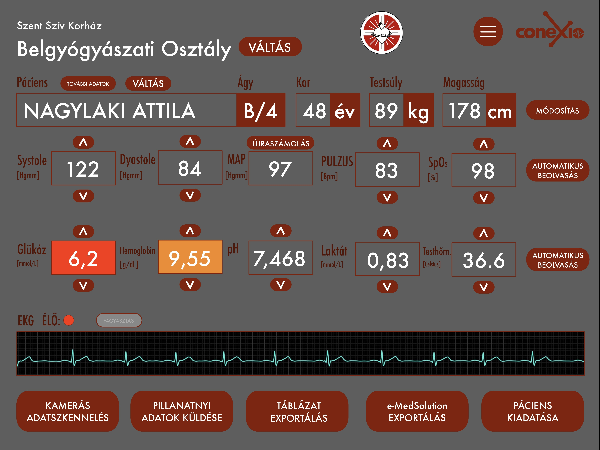
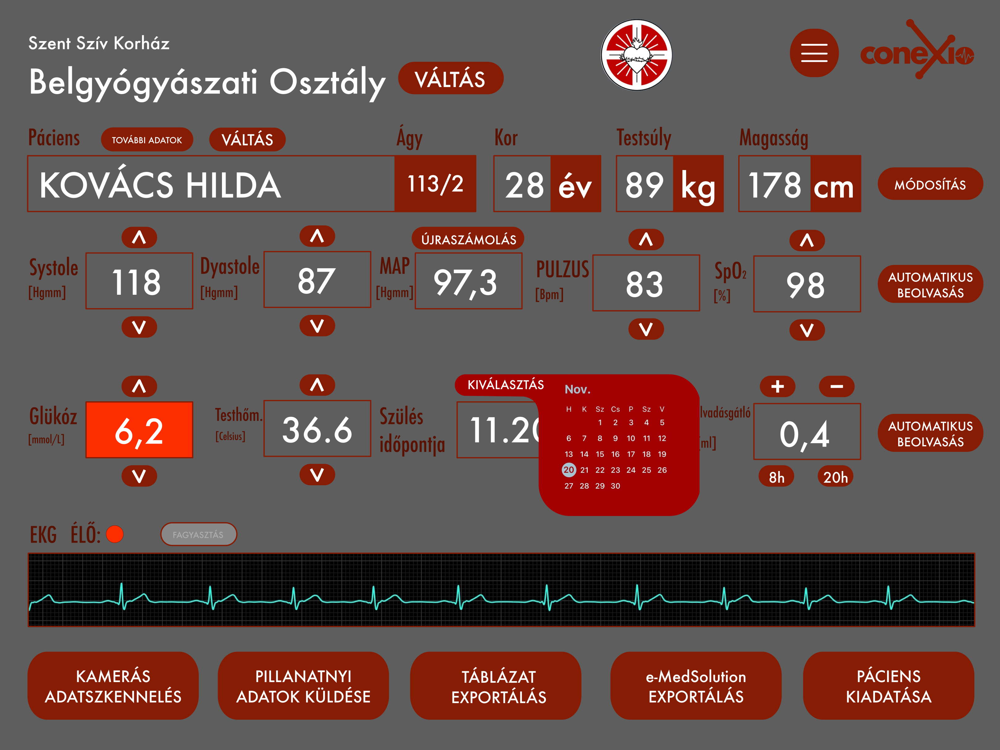
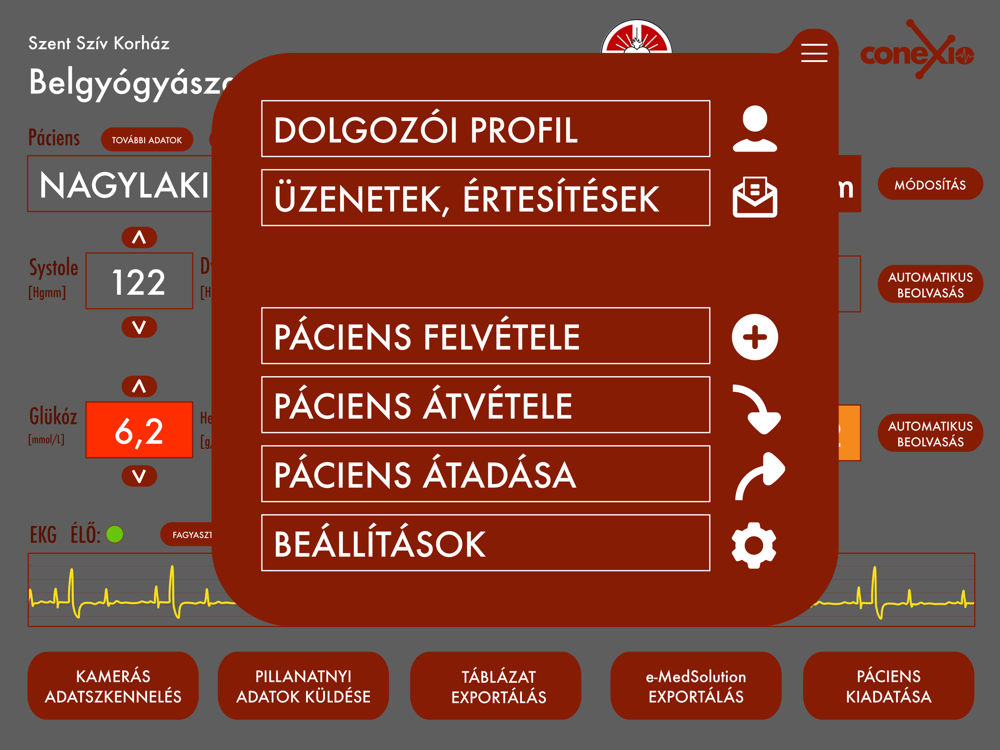

Mi a ClinnoMed?
A ClinnoMed egy olyan egészségügyi betegadatkezelő szoftvercsomag, amely a kórházak egy nagy hátráltatóját, a papírmunkát rövidíti le, ezzel több időt hagyva a valós betegápolásra. Fő funkciók között olyanok találhatók, mint az egy-érintéses beteg rekord rögzítés, kamerás adatszkennelés, hangfelismerés alapú terápiadokumentáció, valamint a vizit illetve záró-export. Az alapja pedig egy tableten is könnyedén használható, intuitív adatbázis-kezelő rendszer.
Rövid projektbemutató
A ClinnoMed EMR (korábban Conexio) egy multiplatform betegadat-kezelő szoftver, amely olyan fő funkciókkal rendelkezik, mint a kamerás adatscannelés, az AI támogatott értékpredikció, illetve a vizit-és MedSol export. Célunk, hogy megkönnyítsük az egészségügyi dolgozók munkáját egy elektronikus egészségügyi dokumentációs szoftverrel, amely a beteg felvételétől, a kórtermeken keresztül, a zárójelentésig segítené a munkájukat.
Látványtervek
Főoldal:
A képen látható, hogy milyen számos sokszínű funkciója van a weboldalnak.
Főoldal, a naptár meg van nyitva
A képen látható a naptár, mellyel a szülés időpontját lehet kiválasztani.
Főoldal, a menű meg van nyitva
A képen látható a menü.
Team
-
Takács Martin Ferenc
CEO, Founder
Én felelek az ötlet és a csapat helyes irányba haladásáért, illetve a networkingért és a pitchekért.
-
Magó Szabolcs Zoltán
Sales, Councel
Én felelek a salesért, és a jogi kérdések megválaszolásáért.
-
Fábián Bernát
CTO, Software developer
Én felelek a szoftverfejlesztés irányításáért.
-
Rózsa Zsombor
Szoftverfejlesztő
Flutter alkalmazás elékszítése
-
Karmann Roland
Mentor
A csapat mentorálása
0.0.4-es verzió kinézete:
.png)
.png)
.png)
.png)